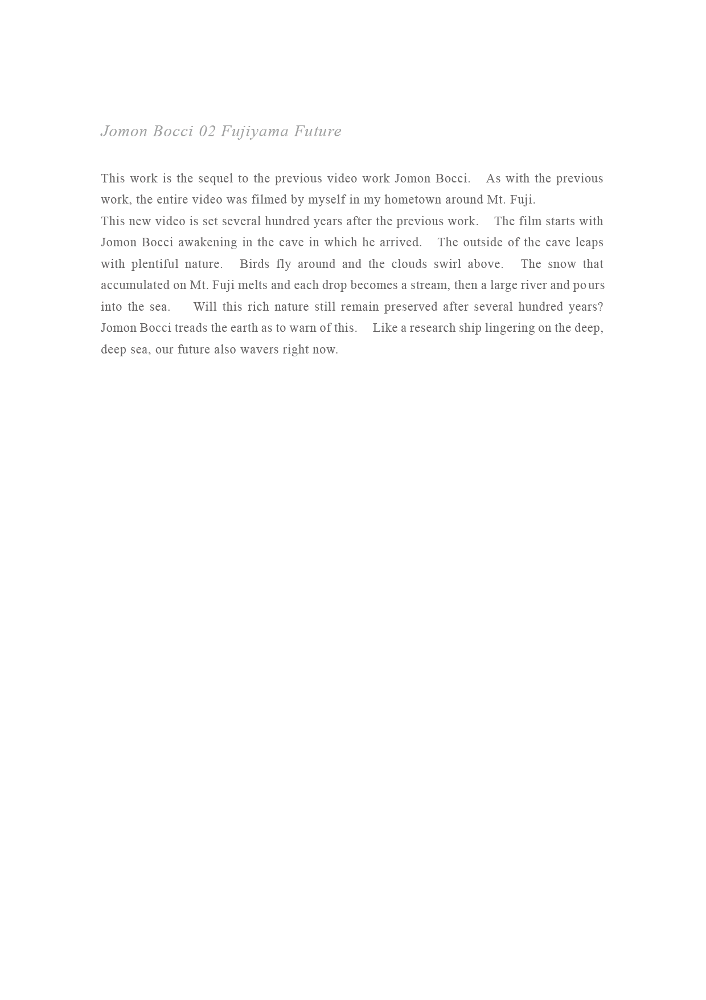
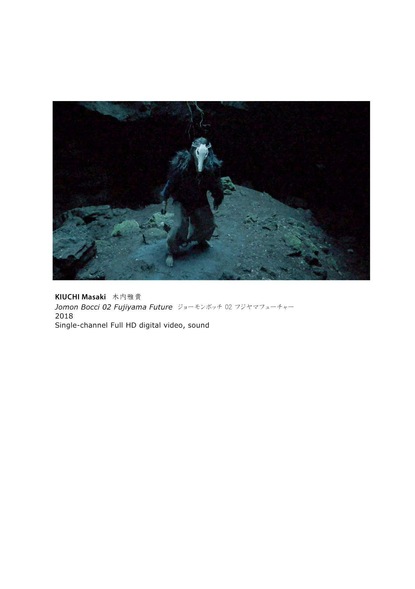
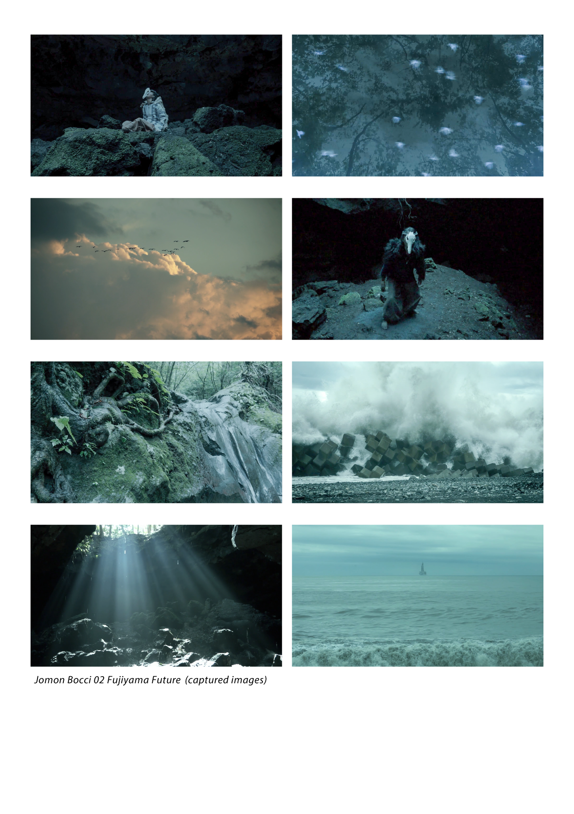

KIUCHI Masaki / Artist
Expedition
works
Alternature
Jomon Bocci 02
Tangent
Jomon Bocci
Kamisama Othello
View from Mt.Myojo
TSUKINOWA
About
Jomon Bocci 02 Fujiyama Future
2018
Single-channel Full HD digital video, sound



×
×
×